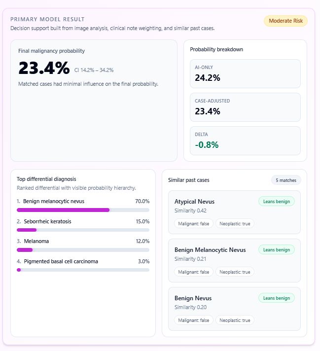
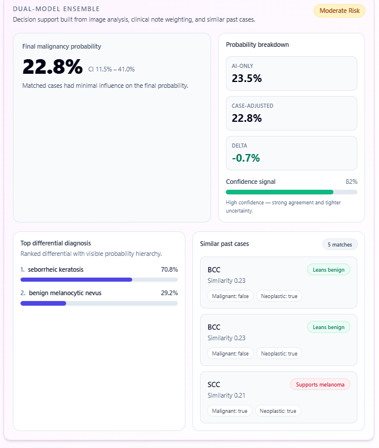

OmniRisk
Risk support with image, context, and case-aware output.
OmniRisk combines uploaded images, clinical context, selected diagnostic categories, and similar past cases to produce structured decision support.
Input is clinically weighted.
The image is interpreted together with the note, patient history, lesion site, timing, symptoms, and other context. This keeps the output closer to clinical reasoning rather than image-only pattern matching.

Images · categories · patient history
Probability is separated from explanation.
The result can show final probability, confidence interval, differential hierarchy, probability breakdown, and similar past cases. This makes the output inspectable rather than opaque.
Dual-model ensemble views help represent agreement and uncertainty when available.


Primary model and dual-model ensemble
AI-only
The model’s image-and-context estimate before case adjustment.
Case-adjusted
A probability influenced by similar verified cases when available.
Confidence signal
A practical indication of agreement and uncertainty, not a replacement for clinical judgment.